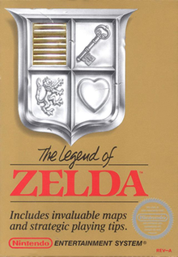

Bertie the Brain is the earliest known computer game to have a video display. released August 25, 1950, Bertie was a tic-tac-toe game featuring an artificial intelligence opponent with an adjustable difficulty level, and was created to demonstrate the additron tube, a miniature vacuum tube that was made obsolete by the transistor before it could be used in any machine other than Bertie. Bertie no longer exists, as the only machine to ever exist was disassembled after two weeks of display.
Bertie
Zelda

The Legend of Zelda is an action-adventure video game developed and published by Nintendo and designed by Shigeru Miyamoto and Takashi Tezuka. Set in the fantasy land of Hyrule, the plot centers on a boy named Link, the playable protagonist, who aims to collect the eight fragments of the Triforce of Wisdom in order to rescue Princess Zelda from the antagonist, Ganon. During the course of the game, the player sees Link from a top-down perspective and must navigate him through the overworld and several dungeons, defeating enemies and finding secrets along the way.
Sonic the Hedgehog

Sonic the Hedgehog[b] is a platform game developed by Sonic Team and published by Sega for the Sega Genesis console. The game was first released in North America in June 1991, and in PAL regions and Japan the following month. The game features an anthropomorphic hedgehog named Sonic in a quest to defeat Doctor Robotnik, a scientist who has imprisoned animals in robots and stolen the magical Chaos Emeralds. Sonic the Hedgehog's gameplay involves collecting rings as a form of health and a simple control scheme, with jumping and attacking controlled by a single button.